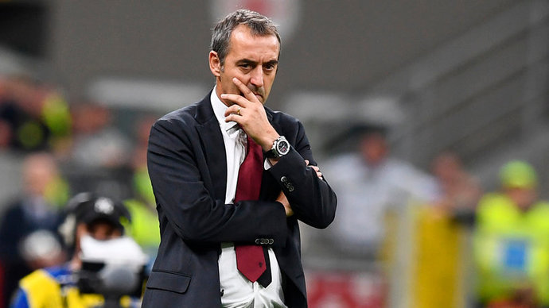

 Главный тренер «Милана» Марко Джампаоло может быть отправлен в отставку, несмотря на победу над «Дженоа» (2:1) в матче седьмого тура чемпионата Италии. По информации источника, этой победы не хватило, чтобы убедить боссов красно-черных оставить 52-летнего специалиста на его посту.
Отмечается, что директор клуба Звонимир Бобан категорически настроен против Джампаоло, в то время как технический директор Паоло Мальдини поддерживает тренера.
В качестве вариантов замены Джампаоло называются: Стефано Пиоли, Клаудио Раньери, Лучано Спаллетти и Арсен Венгер. «Милан» после семи туров занимает 13-е место в турнирной таблице серии А, набрав девять очков.